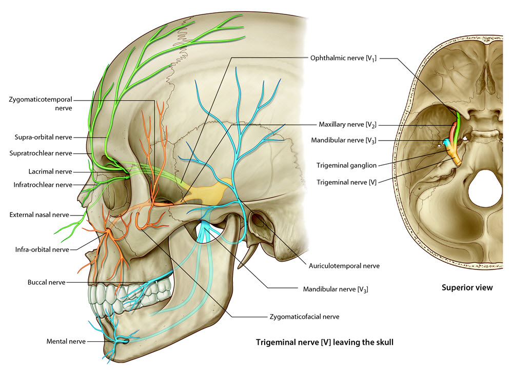

READINGS:Gray's Anatomy for Students (Fourth Edition): Pages: 970-981 |
Neurology 5 - Module 3 - Muscles, Nerves and Vessels: Page 1 of 6
Motor innervation of the muscles of mastication
|  |
| Tap on image to enlarge |
Motor innervation of the muscles of mastication
| Change to a lateral view of the skull. |
| Rotate and add the medial pterygoid muscle. |
| Add the lateral pterygoid muscle. |
| Rotate and add the temporalis muscle. |
| Rotate this image to understand the relationship of the temporealis muscle to the zygomatic arch. |
| Add the masseter muscle. |
What nerve controls these muscles? |
|
|
The mandibular branch of the trigeminal nerve V3. |
|
What is the significance of this nerve? |
|
|
It contains the only motor branch of the trigeminal nerve. |
|
What other muscles does this motor nerve supply? |
|
|
|
|